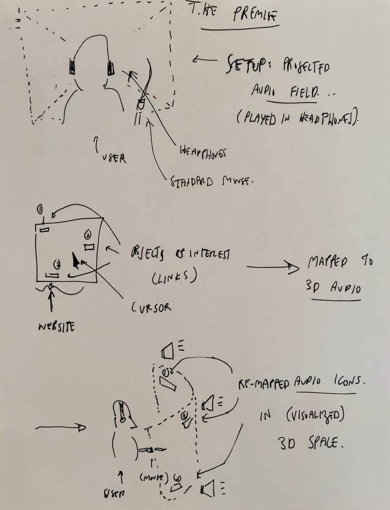
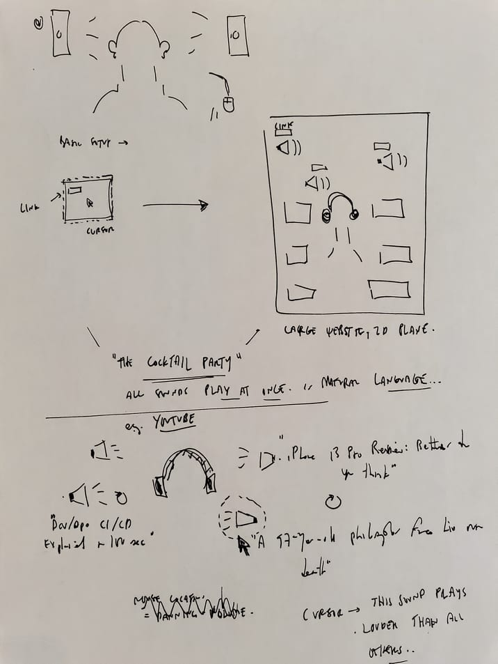
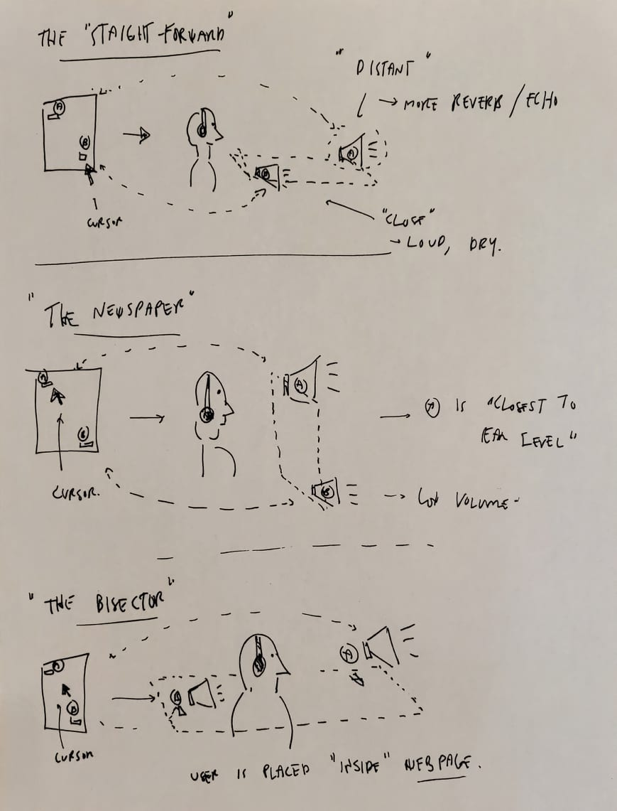
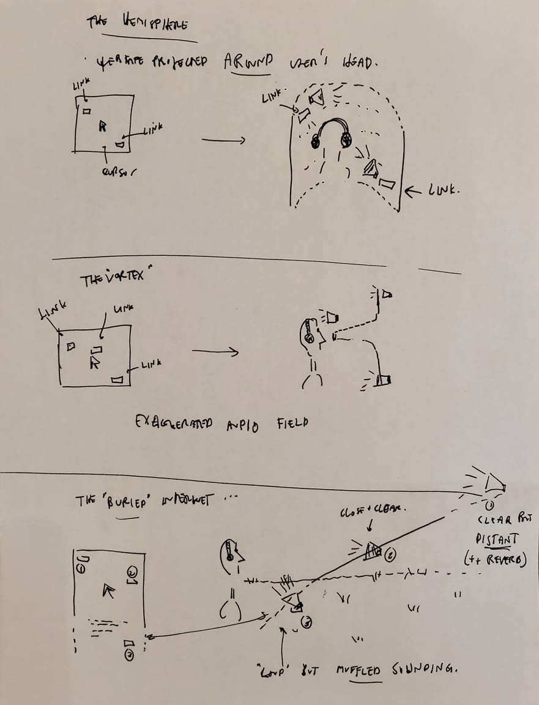
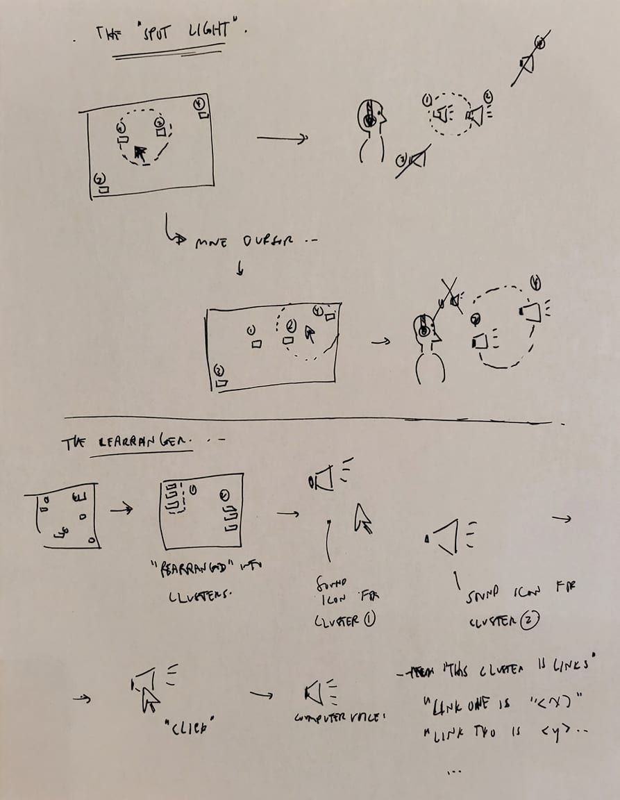
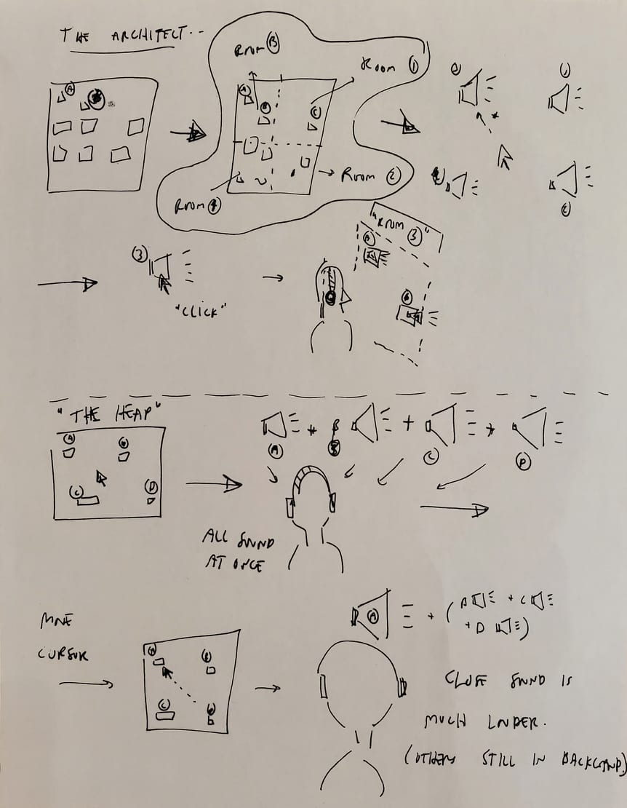

Welcome to ECSE424 HCI Group 13 Notebook
Low-Fidelity Prototype and Test Plan
I. Design concepts
In order to center conceptually around the design process, we step through the 10 plus 10 design procedure. This seven-step process begins with a formal statement of the design challenge.
The design challenge
There are many existing solutions for internet navigation for those who cannot see the screen (either because of limited vision, or those who situationally do not have access to a screen); most involve discarding the spatial dimension of a website. For example, screen-readers narrate a website content from top to bottom; this reduces the 2-dimensional layout of the website into a 1-dimensional stream, which users can only travserse in one of two directions. For example, passing from the top to the middle of the page necessitates moving through all of the content in between. Eye-tracking data suggest that there are numerous patterns of visual search across a website, including an "F-shaped" pattern in which users scan alternately vertically and horizontally [1].
In this design challenge, we seek to bring the additional degree of freedom of 2-dimensional website navigation to those that cannot see a screen. In particular, how can we convey the spatial layout of a website using audio?
The design concept
An initial round of sketching leads the team to the following basic design, which forms the basis for ten futher variations. A detailed description follows below.
Description. These sketches are meant to be self-explanatory; however, for the curious reader we provide detailed information in this paragraph. The user is wearing head phones and has access to a standard mouse or trackpad device. In the top figure, the dotted box represents an audio field, i.e., audio that has been mapped to the left and right speakers of the heaphones to create some illusion of a three-dimensional space. In the second figure, three schematic links, labeled "1" "2" and "3," are shown near a cursor. These links are assigned auditory "icons," indicated by the speakers in the third figure. Based on their spatial relationship to the cursor, these auditory icons are mapped to different locations in the audio field. As an example, we show a hemi-cylindrical field.
This design shows considerable promise, but the format permits many possible variations; specifically, there are many ways to map the locations of the links to an audio field. We explore these possibilities in the next step of the 10 plus 10 methodology, by sketching ten variations on this theme.
 Description. A secondary early sketch of links, layouts and auditory icons. We introduce the phrase "cocktail party" to refer to the "cocktail party problem," a phenomenon in auditory psychology refering a human auditor's natural ability to pick out and focus on one voice from among many intermingled in a crowd. To what extent can the team take advantage of this phenomenon, and turn a busy website layout into an auditory cocktail party?
 Description. Three initial variations. We determine early on in the sketching process that it is useful to give each sketch a nickname, when discussing the relative merits and problems of each. The first sketch is "the straight-forward": here, the website is mapped to a flat plane that recedes away from the user. Links higher up the page are sonified as farther away. We indicate in the sketch that "distant" is achieved by adding extra reverb or echo to the most distant sounds. "The newspaper": this idea is very similar to the former; here the website "hovers" in front of the user. Links closest to the cursor are brought closest to ear-level. "The bisector" is a variation on the first sketch; here however, the user is immersed in the page. Links below the user cursor are mapped to a sound behind the user (it should be noted, however, that this is particularly difficult to achieve as a binaural auditory illusion).
 Description. "The hemisphere" makes an exaggerated view of the website by wrapping it around the user's head. This takes advantage of the fact that auditors have greater spatial acuity for sounds approaching from the side, rather than sounds coming head on. "The vortx" build on the idea of distorted mapping, by placing a particularly strong emphasis on the links near the cursor. Here they are brought closer to the user's head, while the backgrounded sounds remain distant (with relatively greater reverb/echo). "The buried" is an exaggerated combination of the straight-forward and newspaper concepts. Here the plane is tilted backwards, to take advantage of both distance- and elevation-related auditory spatial cues; the sketch gets its name from the fact that the closest sounds are spectrally altered to sound muffled (perhaps with a simple low-pass filter).
 Description. With the following sketches we start to move away from the more literal mapping, and start to play with intermediate filtering and sorting steps. In "the spotlight", only those links that are close to cursor are sonified. This setup encourages exploration on the part of the user, but will not give a full overview of the layout of the page. Perhaps the reduced complexity will make for a more pleasant browsing experience. The "rearranger" builds on the idea of focus and simplicity by sorting the page into thematically related clusters. Each cluster gets its own auditory icon; and by clicking on this icon, the user steps to the next level of detail, e.g., exposing the auditory icons of the constituent links.
 Description. Here we continue to play with the idea of segmetation and simplification. In "the architect," rather than intelligently cluster links, the website is subdivided into smaller "rooms". Each room is given its own sound-icon based on its location on the main page layout. By clicking to enter a room, the user is presented with a smaller, concise sonified layout as in one of the earlier designs. Finally in "the heap" we seek to explictly take advantage of the cocktail party effect. Here, all sound icons are played at once, at a moderate volume. As the user cursor passes over an object of interest, its auditory icon is made louder than the others, but the rest remain in the background. This is an extreme notion, and not one that would likely result in user comfort, as it would be very difficult to navigate around the webpage -- there is no spatial information whatsoever for the user.
II. Prototypes
After we have the sketches, we evaluated all the designs and we picked three of them. The first one we picked was the straightforward design because the speakers and the cursor are all moving in a restricted area with the same shapes. So the advantage of this design is user-friendly. The second design we picked has a similar sound theory to the first design. It is called the newspaper, the user will use it similar to the first one but instead of getting sound horizontally, this time the sound is moving vertically. Just like its name, the users will be like reading a newspaper when navigating the websites. The last one we picked was the semi-cylinder which is one we get after sketching. Compared to the first two designs, semi-cylinder speakers will move closer to the user and the sound is moving in a 3D platform. So we would like to prototype this design to see whether a more surrounded sound environment will bring a better experience to the user.
Straight-forward:
The user uses the cursor to find the aimed object at the top of the page. When the cursor moves up the page, the speaker will move closer to the user. When the cursor moves down the page, the speaker will move further away from the user.
 |
 |
Karl has set up the environment for the cursor and the speakers. They all move in a horizontal plane. In the first picture, Karl moves the cursor from the middle to the left side of the page. So in the second picture, you can see the outcome of the speaker that the speaker moves to the right. The reason why it is moving in an opposite way is that the red speaker denotes the aimed red object. At the starting point, the sound of the speaker tells you that it is on the left-hand side. So after the movement, you will know that the object is in front of you.
 |
 |
Then Karl prototypes what will happens if the cursor goes up. So he first set the cursor at the middle and the two objects are both on the top corners. Then the speakers need to move closer to the user since the user is in the middle. When the cursor moves up in the page then the two speakers move down to the bottom of the page. To think Straight forward in an easy way, we can assume the user(reference of the cursor) always stays at the bottom middle point.
Newspaper: Similar to the straight-forward design, but the plane is vertically and perpendicular to the cursor’s moving area. So if our aimed object is at the top of the page then, the speaker will move down when the cursor moves up.
Karl has set up the environment this time the speakers move on the wall which is perpendicular to the table. the newspaper design shows the same behavior as the straight-forward that when the cursor moves to the left, the speaker will move to the right. So here we will see how it behaves with two speakers.
 |
 |
We then find the difference that in this design, the user(the reference of the cursor) is assumed to be the middle point. Like the above picture 1 illustrates when the cursor is at the middle point. Two speakers will be exactly upper and downer side of it. In picture 2, the cursor moves down to the green point to the green speaker will be at the middle which is what the user is aiming at.

Here Karl is a little bit unsure about where to place these two speakers. First of all, the cursor is at the bottom left corner. Then that’s the user’s view and what the user is aiming at. The next step to do is to value the cursor’s position to be the middle point of the speaks’ plane. So we get the answer that the green speaker should be exactly on its right while the red one will be upper than the green one.
Semi-cylinder: As you can see from the following graphs, the semi-cylinder design is similar to the newspaper design. But instead of a perpendicular flat plane, the semi-cylinder design is creating a more surrounded environment such that the user can detect the direction of the sound easier.
Karl has set up the environment as you can see the user is facing the speaker moving plane. From graph 1 to graph 2 below, Karl moves the cursor to the right such that the two speakers need to move to the middle of the whole plane. From this observation, we know that this design assumes the user to be in the center of the plane also.
 |
 |
Here is an interesting case, the following picture shares the same result when the cursor is closer to the two objects. Thus the whole plane needs to increase its size to make sure the user can easily track if he/she is close or far from the object.

Conclusion: Karl has done a lot of test cases to see if our picked design works in reality. Although the semi-cylinder could give users a better sound experience. The size of the plane is still a hard thing to think about. Besides, we want to use sensors for transitive signals it is hard to install sensors in this case. Overall, we find some drawbacks of semi-cylinder, so our test designs are straightforward and newspaper.
III. Usability goals and benchmark tasks
Usability Goals:
1. Learnability: The user should be able to learn the sound mapping quickly.
We want our users to quickly understand how moving the cursor affects the sounds they hear.
2. Ease of use: The user should be able to identify the position of multiple objects on the screen, and determine how they are placed in reference to one another.
One of the most popular assistive technologies for visually-impaired internet users is the screen-reader system. Screen readers must necessarily collapse the website into a one-dimensional stream of information, and do not permit users to understand the relative placement of objects in a webpage. The system should allow users to feel that the objects have their own space, and that the cursor helps them move towards the object.
3. Efficiency: The system should not be stressful or cause any sort of sound anxiety to the user. Instead, it should feel helpful and inviting.
The system is intended to be an every-day assistant to the visually impaired. Therefore, it cannot be stressful to the ears or to the mind. The system should feel inviting, comfortable, and help the user orient themselves by sound cues. After two to three minutes of use, the user should have a reasonable sense of where every object is on the page.
4. Effectiveness: The system should permit the user to find objects with confidence, and without spending too much time thinking.
Users should be able to navigate into a new webpage and directly follow the sound cues towards an object of interest. The experience should be faster, less stressful, and require fewer interactions than current screen-reader assistants. The auditory scene should be inviting and pleasant to the user, who will in turn become familiar with the sound environment associated with a given page, and will be able to come back at any time knowing where objects are placed.
5. Satisfaction: Users should feel like their browsing experience has become better and faster. They should feel like they know where everything is on the website.
The goal of this project is to help visually impaired users with the issue of orientation when navigating websites. Therefore, it is essential that users feel the system is not only pleasant to use, but helpful.
Benchmark tests:
1. Navigate towards the object that is closest to your cursor, and double click. 2. Move your cursor at the other object on the page; double click when you have arrived there. 3. Find the halfway point between these two objects, and double click. 4. Find the greatest distance from the two objects without reaching the edge of the website, and double click. 5. Make a rough sketch of the layout of the page as you imagined it.(Repeat with “Straight-forward,” and “Newspaper” layout prototypes, each with different image positions)
IV. Test materials
V. Summary of test results
QAQ